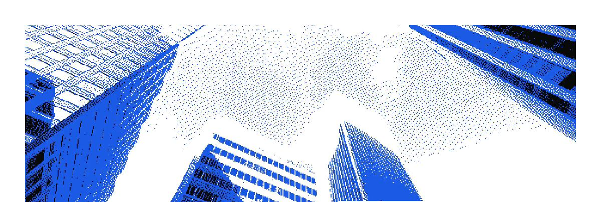
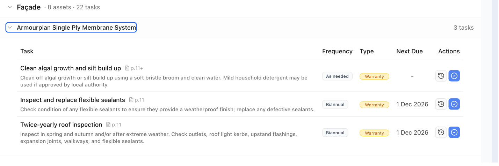
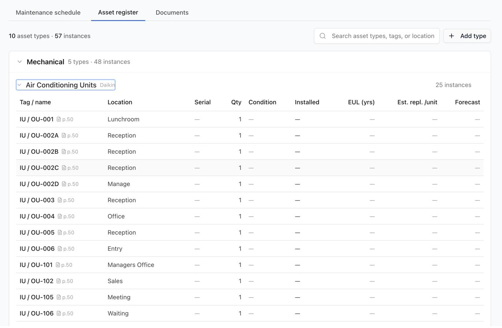
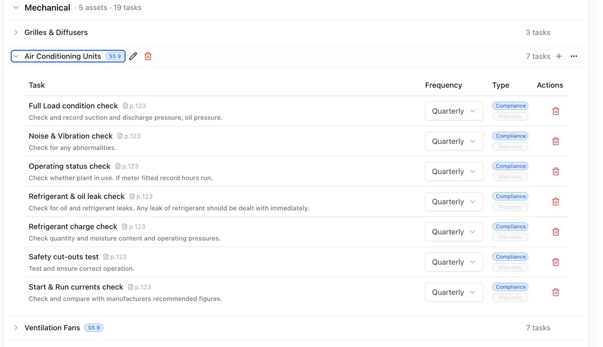
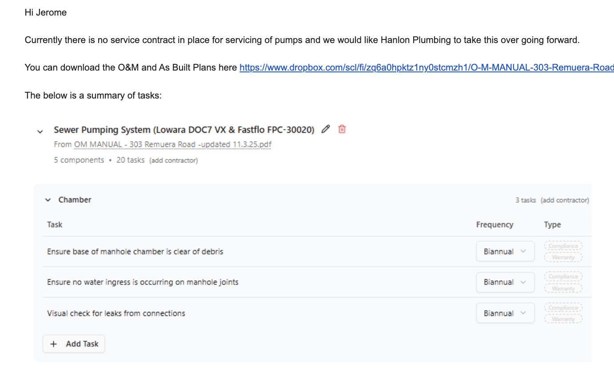
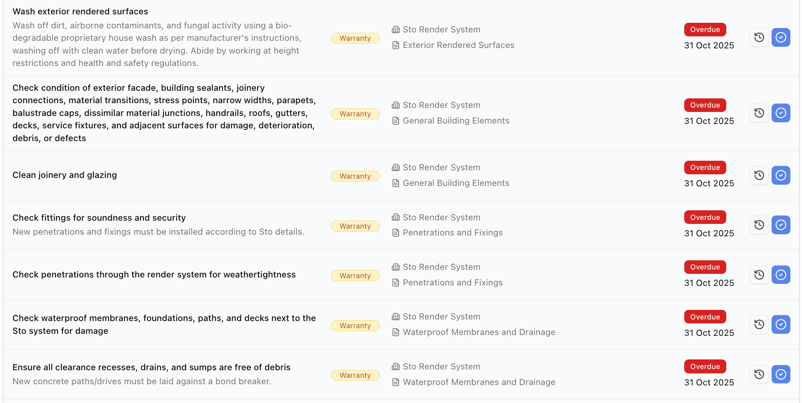

Prospero reads your O&M documentation and generates a complete, traceable maintenance programme — asset register, compliance schedule and lifecycle forecasting included — in minutes, not months.


Every building comes with thousands of pages of O&M documentation that determine long-term maintenance obligations. Almost none of it is acted on systematically.
Extracting maintenance tasks from a single O&M manual set consumes specialist time that should be spent on risk-critical work — not reading PDFs.
Facades, membranes, envelope systems — everything outside the compliance scope sits entirely unmanaged, with no plan and no visibility.
Each new acquisition restarts the same manual process from scratch. No institutional memory, no consistency as a portfolio grows.
When issues surface, remediation typically costs 3–7× what proactive maintenance would have. The longer it's deferred, the worse the outcome.
Drag and drop PDFs directly into Prospero. No formatting required.
Every specification and interval is read, organised by asset, and flagged for compliance and warranty relevance.
Review specified system tags and shape the output to fit how your organisation works.
Organised by asset, component and task — complete with compliance and warranty tagging, ready to action.
Three views into a live maintenance programme — generated directly from your own O&M manuals, not a template.
Every asset in the building is catalogued — down to the tag, location and serial number — with the lifecycle data your capital plan actually needs.

Tasks are pulled from manufacturer specifications with the correct frequency already set — and split cleanly by what's legally required and what protects your warranty.
Each task carries its Specified System tag, so compliance items line up directly against the systems your IQPs are accountable for — and every entry cites the exact page it came from.

BWoF covers the regulated minimum. The assets that drive your largest costs and liabilities sit entirely outside it — unmanaged by default.
That gap is where deferred maintenance liability accumulates — silently, until it surfaces. Prospero shows the full picture: structured, traceable, complete.
Book a demoDelivering new assets and needing operational readiness from day one — not months spent deciphering handover documentation.
Responsible for structured, usable handovers — not dumping thousands of pages of O&Ms, warranties and manuals at practical completion.
Inheriting assets with fragmented documentation, unread O&M manuals and no clear operational maintenance framework.
Managing portfolios where maintenance visibility, compliance obligations and lifecycle planning directly influence capital outcomes.
Responsible for day-to-day maintenance and compliance, but often operating from incomplete or unstructured asset information.
Ingesting the O&M manual surfaced that the sewer and stormwater pumping systems had no service contract in place at all — they simply weren't covered by the incumbent contractor's scope.
"I was able to get that email together in about 20 minutes instead of spending half a day going through the manual."Senior Facilities Manager

Automatic tagging separates legally-required items — like annual backflow testing under NZ BWoF — from manufacturer warranty conditions that are easy to lose track of, such as facade and roof checks.
"If I miss those, I could lose my job. So Prospero making this easier means I want this on all my buildings."Senior Facilities Manager

Proactive schedules eliminate reactive capex spikes — portfolio costs become forecastable.
Auditable maintenance records remove the largest discount applied during due diligence.
Every obligation is documented, tracked and attributable — the audit trail is already there.
New developments and acquisitions onboard in hours. Institutional knowledge becomes structured data.
"We would hire an admin staffer to manually read O&Ms and extract anything with a task and a frequency date. That would take them six weeks."
A construction handover team"At least once a year we would void warranties on our buildings — simply because we did not have the data readily available. Using Prospero has been a game changer."
Retirement sector clientSee Prospero in action. Book a 30-minute demo with the team.
Book a demo